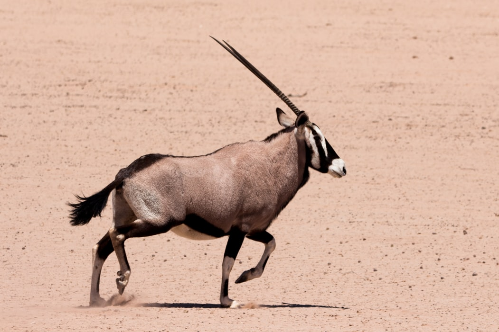
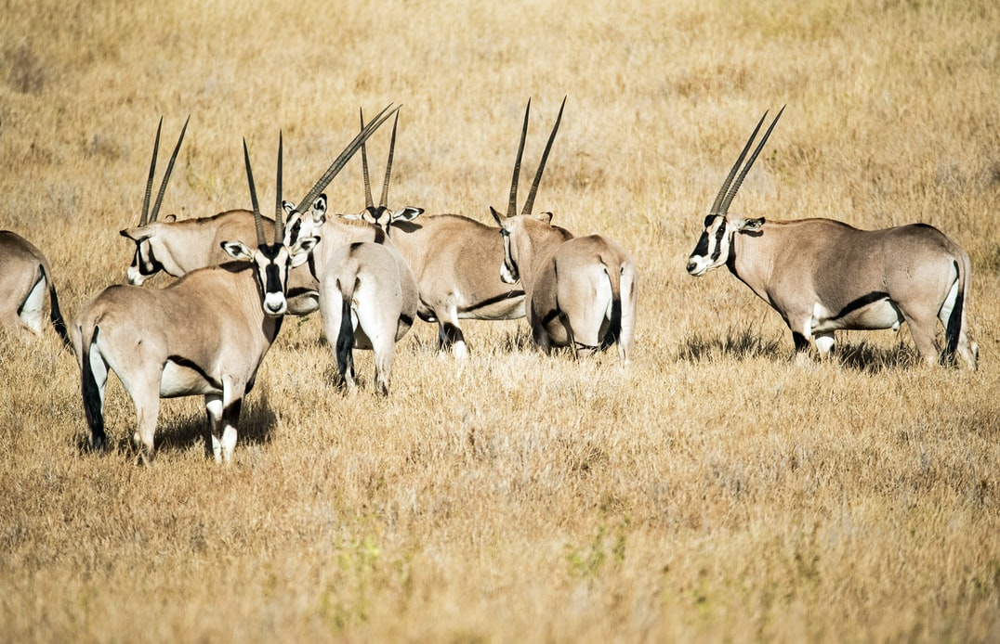
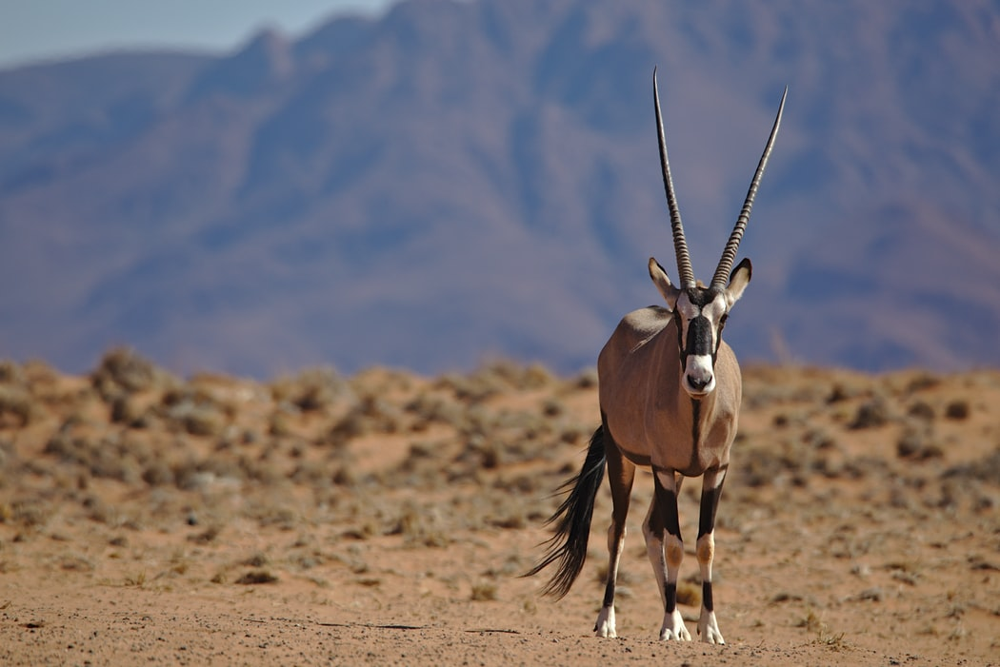

Arabian Oryx As Specie
The Arabian Oryx is the official national animal of the United
Arab Emirates. It is the biggest animal found in the deserts of
Arab countries. This species is a desert antelope that thrives in
its harsh environment. Her gleaming white coat signifies the sun's
rays, and her hooves resemble a paddle and spread out, allowing
the animal to cover a large area while walking on the sandy earth.
These creatures are known for their perseverance and elegance, and
they have inspired many Arab writers.


Living Adaptations
Oryx may be found in open environments such as desert,
semi-desert, arid, and scrublands. Certain areas might become
quite heated! But don't worry about it. Desert Oryx have an
unusual circulation system in their brains. When you breathe, you
chill the blood that passes from your capillaries into your brain.
By increasing the body's temperature to 116 degrees Fahrenheit.
The fringe-oak oryx, on the other hand, can endure periods of
extreme heat. Instead of sweating or evaporating, the light causes
the body to retain cooler air. When there is no shade and it is
too humid, oryx dig low burrows to relax and cool down. The Arab
oryx is the most knowledgeable about the desert. Its bright tint
is represented by the desert heat and sunshine. To keep warm in
his thick foundation on frigid winter mornings, the animal will
elevate his fur. Even in the winter, Arab oryx legs are obscured
to absorb part of the sun's heat. Leopards, lions, and hyenas
employ their long oryx horns for predatory protection. When
assaulted, gemsbok exhibits a distinctive behavior: it appears
bigger sideways. If the opponent is defeated, the gemsbok can
defend itself or strike with its horns.
Diet
Oryx eats solely grass, tree and shrubs shoots, and may travel
long distances in search of pasture. One species is expected to be
93 kilometers long in 18 hours. They can go for extended periods
without drinking, seeming to get their water from succulent and
occasionally dew plants, but drink readily when water is
available. They eat largely in the morning, at night, and maybe in
the evening.
